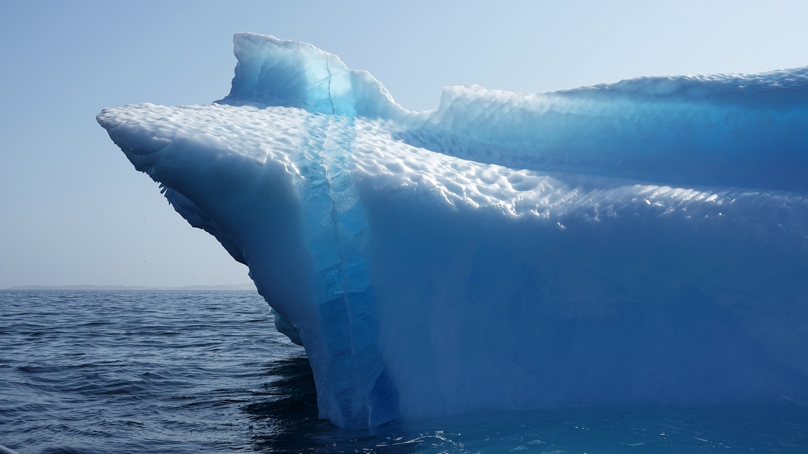
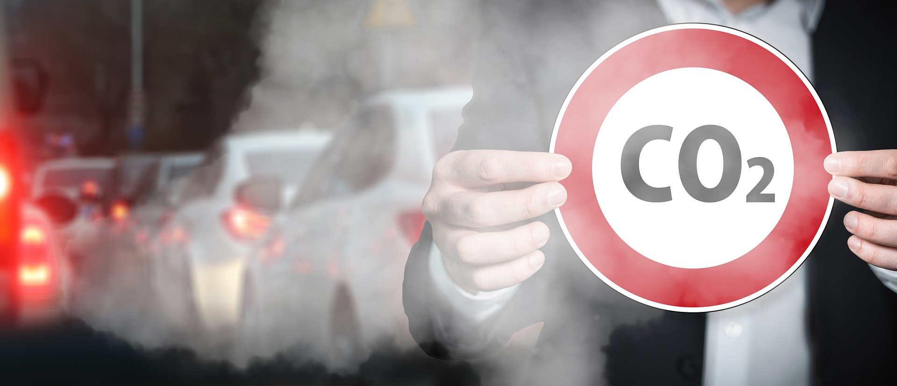
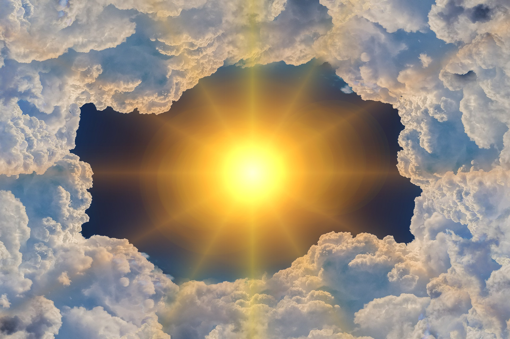

Global warming
Global warming is the long-term heating of Earth's climate system observed since the pre-industrial period (between 1850 and 1900) due to human activities, primarily fossil fuel burning, which increases heat-trapping greenhouse gas levels in Earth's atmosphere.The emission of greenhouse gases due to human activity causes global warming, which in turn causes an increase in temperature that then leads to rising sea levels, melting of polar ice caps, flash floods and desertification.
Deforestation

Deforestation or forest clearance is the removal of a forest or stand of trees from land that is then converted to non-forest use.Deforestation can involve conversion of forest land to farms, ranches, or urban use. The most concentrated deforestation occurs in tropical rainforests. About 31% of Earth's land surface is covered by forests at present. This is one-third less than the forest cover before the expansion of agriculture, a half of that loss occurring in the last century.Between 15 million to 18 million hectares of forest, an area the size of Belgium, are destroyed every year. On average 2,400 trees are cut down each minute. The Food and Agriculture Organization of the United Nations defines deforestation as the conversion of forest to other land uses (regardless of whether it is human-induced). "Deforestation" and "forest area net change" are not the same: the latter is the sum of all forest losses (deforestation) and all forest gains (forest expansion) in a given period. Net change, therefore, can be positive or negative, depending on whether gains exceed losses, or vice versa. The removal of trees without sufficient reforestation has resulted in habitat damage, biodiversity loss, and aridity. Deforestation causes extinction, changes to climatic conditions, desertification, and displacement of populations, as observed by current conditions and in the past through the fossil record. Deforestation also reduces biosequestration of atmospheric carbon dioxide, increasing negative feedback cycles contributing to global warming. Global warming also puts increased pressure on communities who seek food security by clearing forests for agricultural use and reducing arable land more generally. Deforested regions typically incur significant other environmental effects such as adverse soil erosion and degradation into wasteland.
Air pollution
Air pollution refers to the release of pollutants into the air—pollutants which are detrimental to human health and the planet as a whole. According to the World Health Organization (WHO), each year air pollution is responsible for nearly seven million deaths around the globe. Nine out of ten human beings currently breathe air that exceeds the WHO’s guideline limits for pollutants, with those living in low- and middle-income countries suffering the most. In the United States, the Clean Air Act, established in 1970, authorizes the U.S. Environmental Protection Agency (EPA) to safeguard public health by regulating the emissions of these harmful air pollutants. The effects of air pollution on the human body vary depending on the type of pollutant and the length and level of exposure—as well as other factors, including a person’s individual health risks and the cumulative impacts of multiple pollutants or stressors.
Ocean Acidification

Carbon dioxide, which is naturally in the atmosphere, dissolves into seawater. Water and carbon dioxide combine to form carbonic acid (H2CO3), a weak acid that breaks (or “dissociates”) into hydrogen ions (H+) and bicarbonate ions (HCO3-). Because of human-driven increased levels of carbon dioxide in the atmosphere, there is more CO2 dissolving into the ocean. The ocean’s average pH is now around 8.1offsite link, which is basic (or alkaline), but as the ocean continues to absorb more CO2, the pH decreases and the ocean becomes more acidic.
Ozone layer Depletion
ozone depletion, gradual thinning of Earth’s ozone layer in the upper atmosphere caused by the release of chemical compounds containing gaseous chlorine or bromine from industry and other human activities. The thinning is most pronounced in the polar regions, especially over Antarctica. Ozone depletion is a major environmental problem because it increases the amount of ultraviolet (UV) radiation that reaches Earth’s surface, which increases the rate of skin cancer, eye cataracts, and genetic and immune system damage. The Montreal Protocol, ratified in 1987, was the first of several comprehensive international agreements enacted to halt the production and use of ozone-depleting chemicals. As a result of continued international cooperation on this issue, the ozone layer is expected to recover over time.